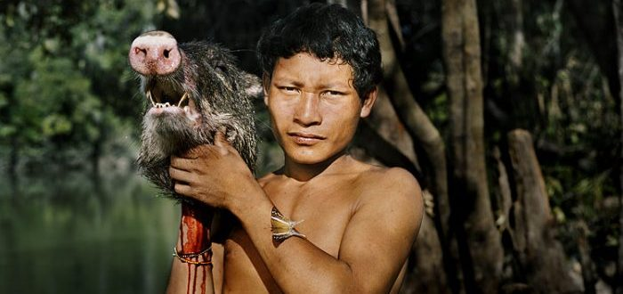
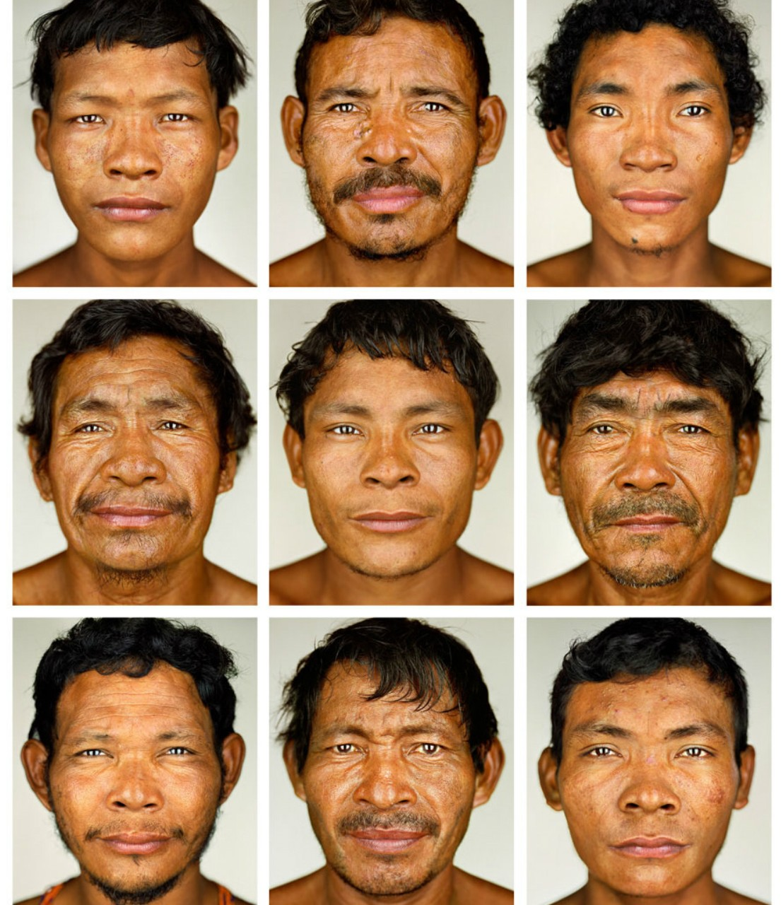
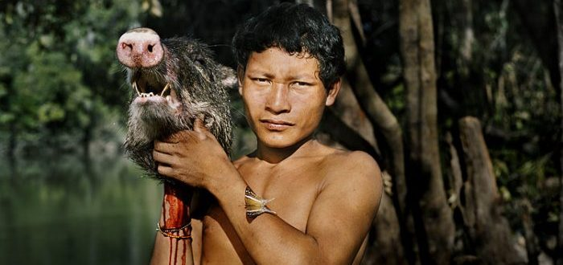
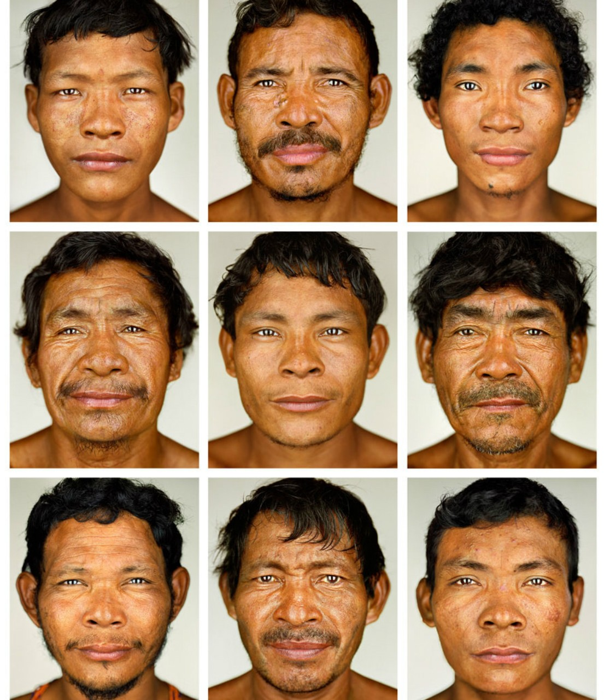

Cultura Pirahá
Caracteristicas
1. Establece las bases del orden social
Forman parte de la cultura los diversos mecanismos que han empleado las sociedades humanas para garantizar el orden y, por tanto, la productividad y la supervivencia.
Antiguamente, la mitología proporcionaba una explicación del origen del mundo, del papel que juega la sociedad en el mundo, y alineaba a todos los miembros de la sociedad tras una misma creencia y visión del mundo.
A este mismo fin están destinadas las normas morales y el Derecho (desde el antiguo Derecho consuetudinario de los griegos, fenicios y egipcios, pasando por el Derecho romano hasta nuestros días).
2. Transforma la naturaleza en beneficio de la humanidad
Una parte importante de esa totalidad que llamamos cultura consiste en la transformación de materias primas naturales, es decir, en la creación de herramientas o tecnologías.
Una de las primeras herramientas fueron piedras laboriosamente lijadas hasta hacerlas lo suficientemente filosas para cortar la carne de los animales cazados.
Otra tecnología fundamental para la multiplicación de la especie humana fue el cocimiento de los alimentos, pues un trozo de carne cocido es un 80% más nutritivo que el mismo trozo crudo.
A la arcilla, disponible en la naturaleza, el humano prehistórico la convirtió en cerámica, e inventó el torno para facilitar el proceso.
3. Se manifiesta simbólicamente
Pero la cultura no se limita a fenómenos materiales, sino que también produce bienes simbólicos.
Un ejemplo es la pintura, que fue cultivada desde los primeros tiempos de la humanidad, como lo atestiguan los bisontes pintados en las paredes de la cueva de Altamira, en España.
También las grandes obras de arquitectura, como Stonehenge, las cuales fueron diseñadas de manera que determinados puntos de la construcción se alinearan con el Sol o la Luna en ciertos días del año.
Puede servirte: Básquetbol
Otros ejemplos de símbolos culturales son la cruz del cristianismo, las banderas y escudos de las naciones, las obras de arte y literarias, las canciones, la moda, el maquillaje, entre otros.
4. Se transmite de generación en generación
La cultura se preserva mediante la transmisión de una generación a otra. En latín, este proceso de transmisión se designa con la voz tradire, que en español evoluciona hasta convertirse en la palabra “tradición”.
5. Es dinámica
La cultura se enriquece con el paso de los siglos; no permanece idéntica a sí misma, sino que se transforma y evoluciona.
Esta evolución se debe a dos causas principales:
La creatividad y el talento de sus integrantes, quienes realizan descubrimientos científicos, inventan soluciones tecnológicas o crean nuevos estilos artísticos.
El intercambio de ideas, bienes de consumo o tecnología con otras culturas.
Galeria
 


